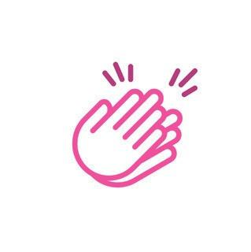
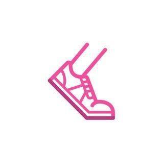
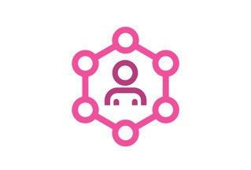
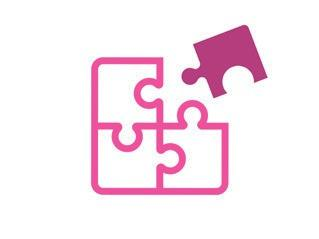
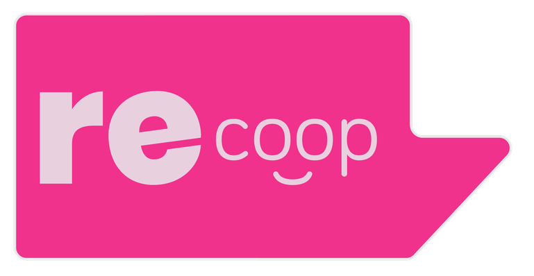
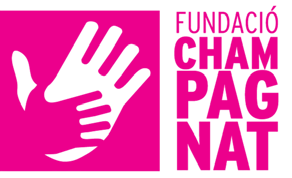
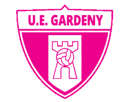
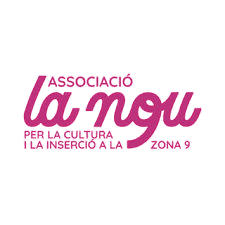
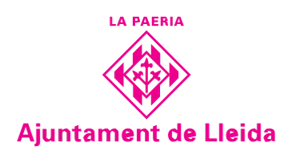

Crear nuevas formas de autoorganización y puestos de trabajo en el territorio.
CATCAS
Comunalidad Urbana · Zona 09 · Lleida
Hacemos red,
somos barrios.
Conectamos personas, entidades y proyectos para transformar la Zona 09 a través de cuatro ámbitos: cultura; deporte, salud y alimentación; empleabilidad; y participación.
La MariolaTuró de GardenyBlocs Joan CarlesBarrios vecinos
01 · ¿Quiénes somos?
La Comunalidad
Urbana de Lleida
La Descomunal incluye los barrios de la Mariola, Turó de Gardeny y Blocs Joan Carles, además de los barrios vecinos de la Zona 09.
Trabajamos para fortalecer los bienes comunes y crear proyectos de ayuda mutua a partir del movimiento vecinal y asociativo, el tejido cooperativo, el pequeño comercio, los proyectos autoorganizados y las redes de apoyo.
Incrementar la vida comunitaria y consolidar relaciones de apoyo mutuo.
Trabajar la pertenencia, la cohesión social y la construcción colectiva.
Diagnosticar y fortalecer los bienes comunes urbanos de la Comunalidad.
02 · Proyectos
Redes que convierten
necesidades en acción.
Cuatro ámbitos de trabajo conectados por una misma manera de hacer: cooperación, proximidad y apoyo mutuo.

Proyecto destacado
Nova
Essència
Un espacio comunitario de mujeres en la Mariola para la formación, el cotrabajo, el empoderamiento y la inserción sociolaboral.
Un proyecto de mujeres y para mujeres que conecta emprendimiento, cuidados, cooperación y liderazgo compartido.
Entrar en Nova Essència01

Cultura
Red ENRE9
Fomentamos el acceso universal a una cultura de calidad y la transformación social. Impulsamos residencias artísticas, la brigada técnica de jóvenes, programación cultural cotidiana y conexiones profesionales.
02

Deporte, salud y alimentación
Red REMOU
Promovemos la actividad deportiva y una alimentación saludable, sostenible y de proximidad. Creamos formaciones y actividades desde una perspectiva crítica, inclusiva, intercultural y feminista.
03

Empleabilidad
Red ENTER
Ofrecemos oportunidades de aprendizaje y formación, reforzamos habilidades y abrimos nuevas vías de inserción sociolaboral. Conectamos los recursos formativos y de empleo del territorio.
04

Participación ciudadana
Crece y Participa
Trabajamos los derechos de la ciudadanía, el antirracismo y la autoorganización. Impulsamos ciclos temáticos, activismo social y vecinal, conciencia y participación comunitaria.
03 · ¿Cómo funciona?
Economía que pone
la vida en el centro.
La Comunalidad genera proyectos económicos y comunitarios que responden a necesidades colectivas y contribuyen al desarrollo local.
Economía social y solidaria
Iniciativas socioeconómicas con valores sociales que ponen en el centro la equidad, la solidaridad, la sostenibilidad, la participación y la inclusión.
Bienes comunes
Recursos y espacios del territorio compartidos y gestionados comunitariamente para satisfacer una necesidad colectiva.
Redes de apoyo mutuo
Organizaciones, agrupaciones y ciudadanía que cooperan para responder conjuntamente a necesidades comunes.
Cooperativismo
Autoayuda, autorresponsabilidad, democracia, igualdad, equidad y solidaridad aplicadas a una gestión compartida.
04 · ¿Quién lo activa?
Comité
activador
El grupo promotor que impulsa, dinamiza y cuida la Comunalidad.

Revalorem SCCL
Cooperativa sin ánimo de lucro y de iniciativa social que trabaja para transformar el sistema alimentario hacia un modelo más justo, saludable y respetuoso.

Fundació Champagnat
Promueve la calidad educativa y la empleabilidad de la infancia, la juventud y las familias de la zona. Lidera el eje de empleabilidad de la Comunalidad.

Unió Esportiva Gardeny
Club deportivo de la Mariola que acompaña la formación de chicos y chicas del barrio y lidera el eje deportivo desde su arraigo en el territorio.

Associació La Nou
Impulsa proyectos culturales y espacios de participación comunitaria arraigados en la Zona 09 desde la experiencia compartida del vecindario.

Ajuntament de Lleida
La Concejalía de Participación Ciudadana conecta la administración local con la ciudadanía y acompaña transversalmente el proyecto.
05 · Contacto
¿Hacemos red?
C/ Artur Mor, 1 · 25003 Lleida
Centre Cívic de la Mariola